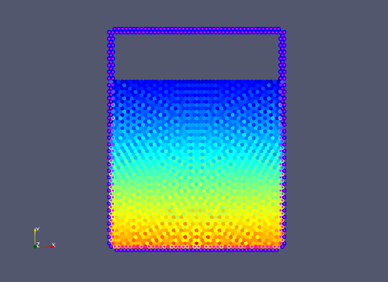

Static container
This is a hello world example of SPH. Simulates motionless fluid in uniform gravitational field. Ideally, nothing should happen because the initial state is stable. However, spurious oscillation are often encountered.
Let us begin by declaring a module and importing some stuff.
module static_container
using Printf
using SmoothedParticlesDeclare constant parameters
const dr = 1.5e-3 #average particle distance
const h = 1.8*dr #size of kernel support
const rho0 = 1000.0 #fluid density
const m = rho0*dr^2 #particle mass
const c = 40.0 #numerical speed of sound
const g = -VECY #gravitational acceleration
const mu = 8.4e-4 #dynamic viscosity of water
const water_depth = 0.14
const box_height = 0.18
const box_width = 0.14
const wall_width = 2.5*dr
##temporal parameters
const dt = 0.2*h/c
const t_end = 0.5
const dt_frame = max(t_end/50, dt)
##particle types
const FLUID = 0.
const WALL = 1.Declare variables to be stored in a Particle
mutable struct Particle <: AbstractParticle
x::RealVector #position
v::RealVector #velocity
a::RealVector #acceleration
rho::Float64 #density
type::Float64 #particle type
Particle(x::RealVector, type::Float64) = new(
x,
VEC0,
VEC0,
rho0,
type
)
end
##dependance of pressure on density
function pressure(p::Particle)
return c^2*(p.rho - rho0)
end
##fluid identier
function isfluid(p::Particle)::Float64
return Float64(p.type == FLUID)
endDefine geometry and make particles
function make_system()
grid = Grid(dr, :square)
box = Rectangle(0., 0., box_width, box_height)
fluid = Rectangle(0., 0., box_width, water_depth)
walls = BoundaryLayer(box, grid, wall_width)
sys = ParticleSystem(Particle, box + walls, h)
generate_particles!(sys, grid, fluid, x -> Particle(x, FLUID))
generate_particles!(sys, grid, walls, x -> Particle(x, WALL))
for p in sys.particles
P = rho0*g[2]*(p.x[2] - water_depth) # hydrostatic pressure
p.rho = rho0 + P/c^2 # solve for density
end
create_cell_list!(sys)
apply!(sys, internal_force!)
return sys
endDefine particle interactions
@inbounds function balance_of_mass!(p::Particle, q::Particle, r::Float64)
p.rho += dt*dot(p.x-q.x, p.v-q.v)*m*rDwendland2(h,r)
end
@inbounds function internal_force!(p::Particle, q::Particle, r::Float64)
if p.type == FLUID
ker = m*rDwendland2(h,r)
#pressure force
p.a += -ker*(pressure(p)/p.rho^2 + pressure(q)/q.rho^2)*(p.x - q.x)
#viscous force
p.a += ker*2*mu/(p.rho*q.rho)*(p.v - q.v)
end
end
function move!(p::Particle)
p.x += 0.5*dt*p.v
p.a = VEC0
end
function accelerate!(p::Particle)
if p.type == FLUID
p.v += 0.5*dt*(p.a + g)
end
endPut everything into a time loop
function main()
sys = make_system()
@show sys.key_max
out = new_pvd_file("results/static_container")
for k = 0 : Int64(round(t_end/dt))
apply!(sys, accelerate!)
apply!(sys, move!)
create_cell_list!(sys)
apply!(sys, balance_of_mass!)
apply!(sys, move!)
create_cell_list!(sys)
apply!(sys, internal_force!)
apply!(sys, accelerate!)
if (k % Int64(round(dt_frame/dt)) == 0)
@printf("t = %.6e s ", k*dt)
println("(",round(100*k*dt/t_end),"% complete)")
println("# of particles = ", length(sys.particles))
println()
save_frame!(out, sys, :rho, :type, :v)
end
end
save_pvd_file(out)
end ##function main()
end ##moduleThis page was generated using Literate.jl.